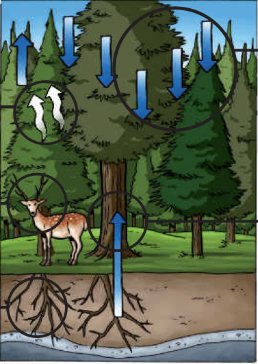

- Fotosíntesis
- Hábitat
- Control de la erosión
- Intercepción y redistribución de las precipitaciones
- Almacenamiento de agua
Los bosques proporcionan un hábitat a una amplia variedad de plantas y animales y cumplen muchas otras funciones que afectan a los seres humanos...